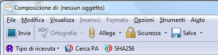
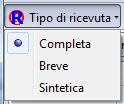
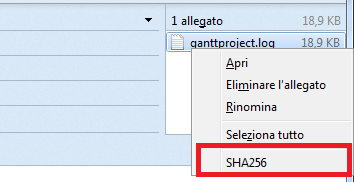
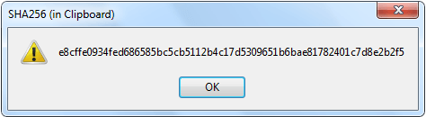

Composizione di un nuovo messaggio

All'interno
della finestra di composizione di un nuovo messaggio, è presente la toolbar aggiuntiva di ThunderPEC.
Attraverso la toolbar, è possibile:
- definire il tipo di ricevuta di consegna

- accedere alla finestra di ricerca degli indirizzi PEC della PA
- calcolare l'impronta SHA256 di tutti gli allegati al messaggio
Nel
caso in cui fosse necessario calcolare l''impronta SHA256 di un solo
allegato, è sufficiente cliccare col il tasto destro del mouse
sull'allegato stesso e selezionare il menu SHA256

I
valori calcolati, oltre ad essere indicai nella finestra di risultato
dell'operazione, sono copiati direttamente nella Clipboard
